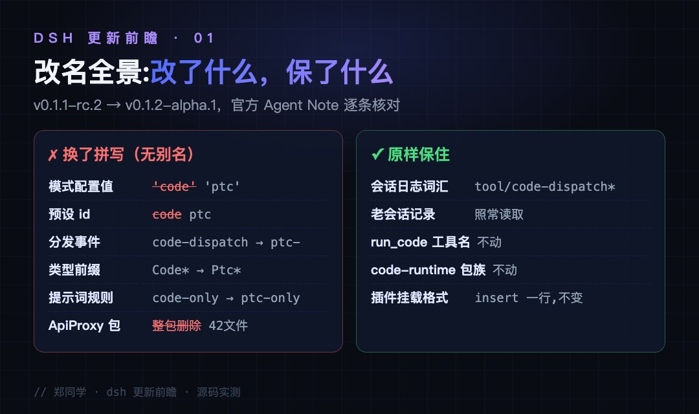
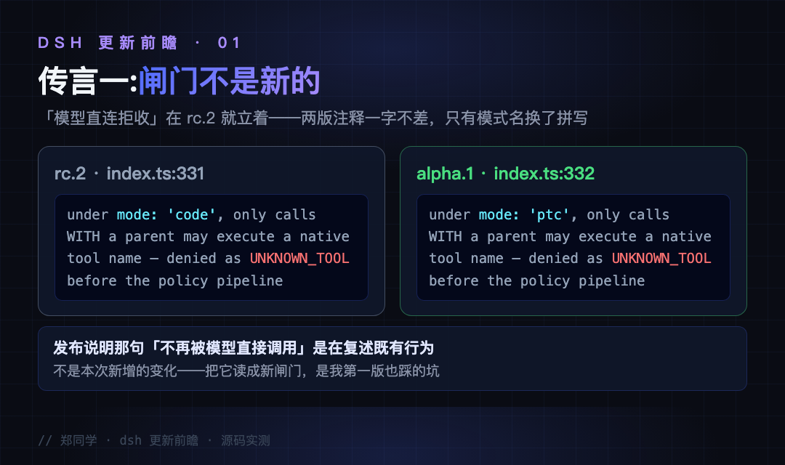
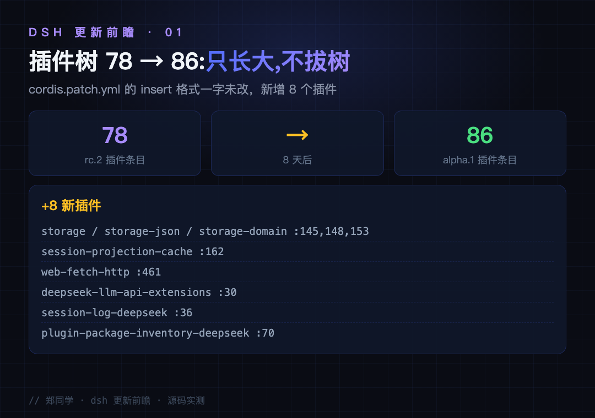
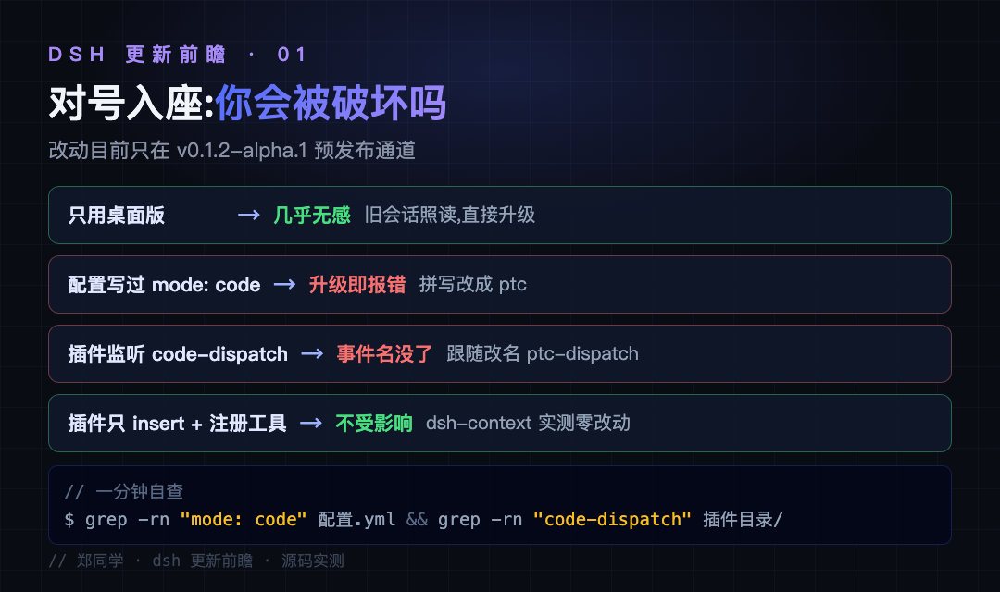

这两天 AI 编程工具的群里反复出现同一个问题：dsh 是不是破坏性更新了？装的插件会不会挂？我先下的结论也是"破坏是真的"——但把 8 月 21 日的 v0.1.1-rc.2 和 8 月 27 日的 v0.1.2-alpha.1 两份源码逐文件再对一遍之后，发现传言里最吓人的那几条，一半经不起源码对比。这一篇把每条传言逐一兑现到 file:line，最后你会发现真正需要动手的只有一类人。
● ● ●
先交代背景。dsh（DeepSeek Harness，DeepSeek 开源的 Agent 框架，主张"一切皆插件"）还在 0.1.x 预发布阶段，从 rc.7 到 alpha.1，每个版本都带 rc 或 alpha 前缀。rc.8 时期还出现过"SQLite 数据结构不兼容"的存储层变更——预发布无兼容承诺是这个仓库的既定立场。
8 月 25 日的改名是真的。dsh 里有个功能叫 Code Mode（代码模式），统一更名为 PTC mode。PTC 是 programmatic tool calls（程序化工具调用）的缩写。它解决的问题是：模型一个个地调工具，每一轮都要想一次、调一次、等一次，工具一多回合数就爆；PTC 让模型写一段程序，在程序里一次性编排几十个工具调用。两种方式的差别长这样：
❌ 逐个调用（native）：模型每调一个工具，都要走完一整轮
想调 A → 发请求 → 等结果 → 想调 B → 发请求 → 等结果 → ...
✅ 程序化编排（PTC）：模型写一段程序，程序里把 A、B、C 排好
发一次请求 → 程序在本地把工具全调完 → 带着全部结果回一轮
为什么要改名？官方 Agent Note（.agents/notes/implemented/architecture/2026-08-25-rename-code-mode-to-ptc.zh.md）说得很直白：同一个功能有两套名字——配置值和事件名写的是 code，界面上却叫「PTC mode」，连中文都早已发布为「PTC 模式」。名字分叉的原因不复杂：界面的预设名跟着产品发布走得快，代码里的标识符跟着实现走得慢，走到预发布后期才发现对不上。Note 原话："预发布阶段的更名必须一次性更新所有引用——不加任何兼容别名。"
最核心的一行类型定义，旧版（v0.1.1-rc.2，packages/core/tools/src/index.ts:651）：
export type ToolPresentationMode = 'native' | 'code' | 'both'
新版（v0.1.2-alpha.1，同文件 :652）：
// 'code' 消失，没有保留任何别名
export type ToolPresentationMode = 'native' | 'ptc' | 'both'
| 改什么 | 旧 | 新 |
|---|---|---|
| 工具模式配置值 | tools.mode: 'code' | tools.mode: 'ptc' |
| 预设目录与 id | presets/code/ | presets/ptc/ |
| 分发事件名 | tools/code-dispatch-log | tools/ptc-dispatch-log |
| 类型前缀 | CodeDispatch* | PtcDispatch* |
| 提示词规则 | tools:code-only | tools:ptc-only |
这张表是真的，每一行都能在两版源码里对上。但改了不等于砸到你头上——哪些人会被砸到、哪些人完全无感，下面逐条对账。

图：改名全景——换了拼写的六处 vs 原样保住的五处（dsh 新旧源码对比）
● ● ●
传言一：模型直连调用被新闸门拦了。 发布说明里那句"PTC Mode 的 SDK 功能只能通过 run_code 调用，不再被模型当作普通工具直接调用"，很多人（包括第一版的我）读成了"这次上了新闸门"。把两版源码同一位置并排放：
rc.2 index.ts:331 under mode: 'code', only calls WITH a parent
may execute a native tool name — denied as UNKNOWN_TOOL
alpha.1 index.ts:332 under mode: 'ptc', only calls WITH a parent
may execute a native tool name — denied as UNKNOWN_TOOL
两行一字不差，只有模式名换了拼写。这道闸门旧版就立着，发布说明是在复述既有行为，不是宣布新变化。顺带说一句，这条闸门本身是合理设计：它让提交式观察者等外层 run_code 的完整结果，而不是收到一个执行到一半的中间状态，避免拿着半成品做决策。

图：传言一对账——rc.2 与 alpha.1 同位置注释一字不差，闸门不是新的
传言二：ApiProxy 包被删，扩展开发者遭殃。 删是真删了——commit 4f00a8b 动了 42 个文件，packages/host/apiproxy/ 整目录移除。但注意它的处境：包名 @deepseek-ai/dsh-host-apiproxy 在 npm registry 查无此包，从来只在 monorepo 内部流转。
它原来管的下载路由并给了 session-export，Fetch 路由并给了 connection（同批提交"own the download route"、"register exact Fetch routes"）。一个不存在于外部世界的内部包，删掉影响的是仓库内部——除非你 fork 整个仓库做二次开发，否则你的代码里根本 import 不到它。
传言三：mode: code 升级即报错。 对写这个值的人成立，但先问一句：谁会写？我拆出本机装着的 dsh 真实 profile 验证过：cordis.yml 是空列表，cordis.patch.yml 也是空列表，package.json 里只按包名引用三个 bundle（base、web-app、你装的插件）——不存 mode 值，也不存预设 id。预设文件由官方 bundle 自带，同一个版本里已同步改成 ptc。普通用户升级的动作只是"换了个包版本"，旧拼写根本没机会被读到。
真正踩雷的只有一类人：自己手写过自定义预设、或者在自己的 patch 里显式配过 mode: code 的作者。这类配置在升级后会被 zod 校验（运行时的数据格式检查）当场拒绝，轮不到业务逻辑——报错信息也会直接告诉你值不合法，照着表改回 ptc 就恢复。
● ● ●
三道验证，结论：坏的是旧拼写，不是插件机制。
挂载格式动了吗？ 没动。插件都挂在 packages/bundle/base/cordis.patch.yml 这棵树上，接入方式就是 insert 一行声明，一行一个插件。两版对比，格式一字未改；base 树从 78 个插件条目涨到 86 个，纯增量。8 个新插件点名：storage 三件套（新版 cordis.patch.yml:145,148,153，给插件提供本地持久化的键值存储）、session-projection-cache（:162，会话列表的投影缓存）、web-fetch-http（:461）、deepseek-llm-api-extensions（:30）、session-log-deepseek（:36）、plugin-package-inventory-deepseek（:70）。8 月下旬装一个 dsh-context，树上 79 行；现在 base 自己就到了 86——生态在膨胀，不在萎缩。

图：插件树 78→86——insert 格式不变，8 天新增 8 个插件（cordis.patch.yml）
头部插件还活着吗？ dsh-context（1100+ star）仓库拉下来验过：patch 只有 6 行 insert，源码零处引用被改名的词汇，8 月 28 日还在提交新功能。一行不用改就跨过这次更新——它只占用最稳定的插件表面（挂一行、注册自己的工具和命令），不碰核心内部词汇。
给插件作者可以划一条实用底线：不写死核心内部的事件名、不 import 未发布的内部包、不在自己的预设里复制官方预设的旧拼写。三件事都不做，预发布期的任何改名都烧不到你——dsh-context 就是这条底线的活例子。
官方保住了什么？ 三样东西写在改名 Note 的"保持不变"清单里（第 26 行）：会话日志的持久词汇（事件类型 tool/code-dispatch*、插件名 tools-code-mode、:code: 子调用 id）全部不动，老会话记录照常读取；run_code 工具名和它的 code 参数不动；dsh-code-runtime* 包族不动。
这份克制还有设计动机：Note 第 32-33 行写明，不升会话格式版本就改持久词汇，会让更名前的会话日志无法读取——所以持久化改名被主动推迟，绑定在 v0 到 v1 的格式迁移上一起落地。数据层完好，改的全是拼写层。
● ● ●
| 你是谁 | 影响 | 要做什么 |
|---|---|---|
| 只用桌面版，profile 没手写过 mode | 无感，旧会话照读 | 直接升级 |
手写自定义预设、配过 mode: code / 预设 code | 升级即报错 | 拼写改 ptc |
插件监听 tools/code-dispatch*、用 CodeDispatch* 类型 | 符号没了 | 跟随改名 |
| fork 源码、import 了 host 内部包 | import 失效 | 改走新归属 |
| 插件只做 insert + 注册工具（绝大多数） | 不受影响 | 什么都不用做 |
两个默认值变化顺带知道：遥测默认 DISABLED 改 FEEDBACK_ONLY（新版 cordis.patch.yml:193，提交反馈时才上传会话记录，DSH_TELEMETRY_MODE=DISABLED 可关）；web-fetch-http 默认上树（:461），fetch 抓网页开箱即用。
什么时候需要动手：这批改动目前只在 alpha 通道，等它随 rc 或正式版推送时，这份清单照用。自查只要一行：在配置和插件目录里 grep mode: code 和 code-dispatch，命中才需要动手，一条没有就放心升级。
最后聊聊为什么这次传得这么凶。三个原因叠加：一是"破坏性更新"三个字自带传播力，谁看了都想转；二是发布说明复述旧行为的那句话被当成了新变化，我自己第一版也栽在这里——验证"是不是新的"只有一个办法，翻旧版源码同一位置对照；三是插件树在快速增长，新增的 storage 三件套容易让人误以为有旧插件被替换，实际树上一行都没拔。传言的成本很低，源码对比的成本也不高，下次再看到"XX 破坏性更新"，先要求给出 file:line。

图：五类人对号入座——从无感到改拼写，一分钟自查命令
● ● ●
code 全套换 ptc、不加兼容别名——但内置预设随包同步改了，普通用户的 profile 里根本不存这些值。下一篇继续盯 dsh 的更新线：持久化 PR 落地前，我会把谁要迁移、怎么迁移、怎么验证老会话没坏整理成清单，抢在官方前面替你踩点。
源码地址：